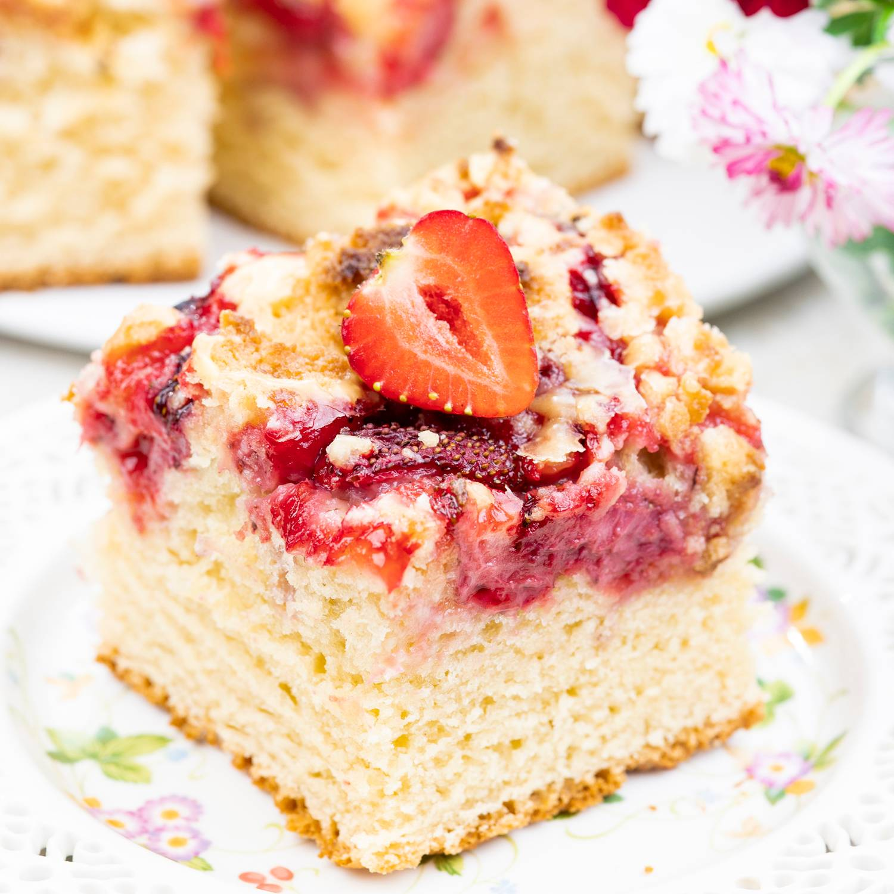

Yeast Cake

Description
Beautiful bouncy yeast cake with plenty of fruit and lemon icing.
Ingredients
- 0.57 kg of plain flour
- 80 g of sugar
- 30 g of yeast
- 250 ml of milk
- 150 g of butter
- 150 g of icing sugar
- Lemon
- 3 egg yolks
- 1 kg of strawberries
Steps
- In a big bowl combine 500 g of flour with 80 g of sugar
- Dissolve 30 g of yeast in 250 ml of warm milk and pour into the flour mixture
- Wait until yeast becomes frothy and combine with 100 g of butter and 3 yolks
- Knead the dough until no longer sticky and leave to rest for an hour
- In a seperate bowl combine 50 g of butter with 70 g of flour and 50 g of icing sugar
- Transfer the dough to a baking tray and sprinkle the strawberries on top
- Crumble butter, flour and sugar mixture on top of strawberries and bake for 45 minutes in 180 degrees celsius
- After baking combine lemon juice with icing sugar and drizzle on top of the cake
Back